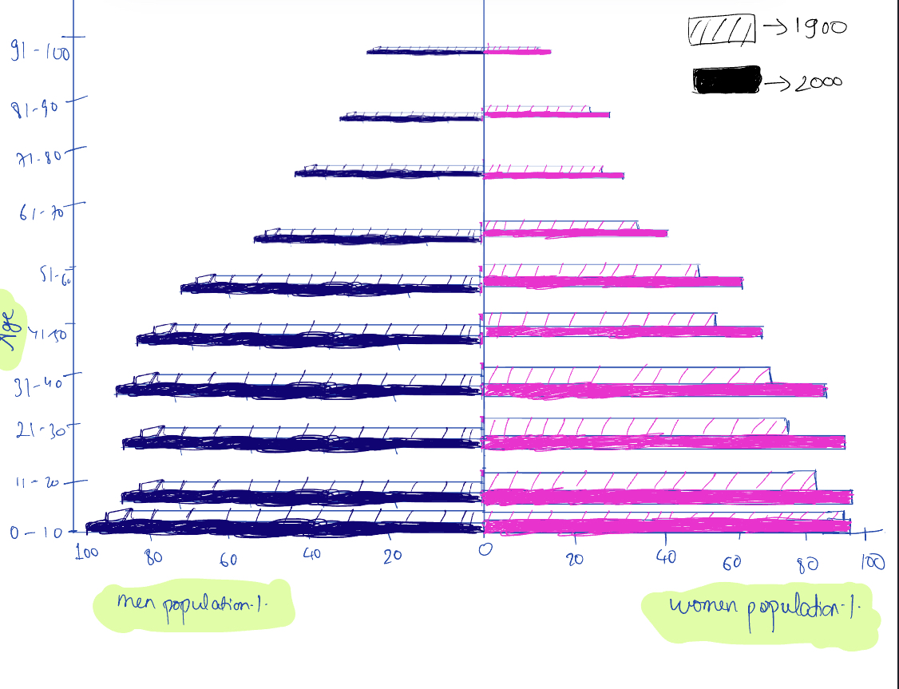
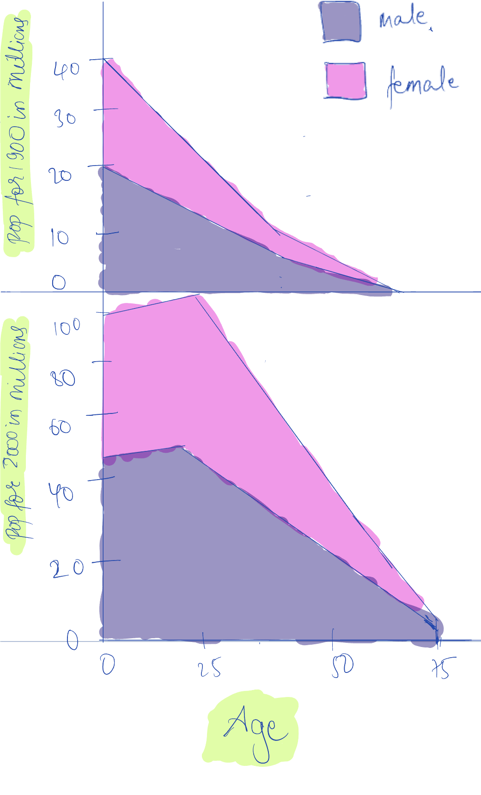
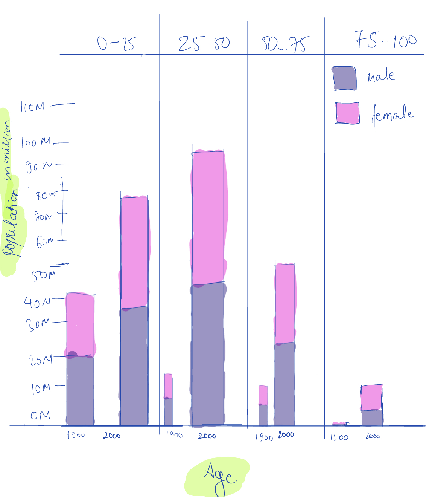

Phase One: Sketching Visualizations
Initial Question: How has the distribution of population across different age groups changed from 1900 to 2000 in the United States?
Population pyramid in 1900 vs. 2000
Design Rationale for Sketch 1:
- Chart structure: Pyramid style sketch for gender and age distinction is pretty standard to show the change in trend of population over ages. I added gender split to it to show side by side comparison.This sketch does a decent job in visualizing population trends between genders and within different age groups inside each gender in between 1900 and 2000.
- Color and pattern: The distinction between the years has been made through textures where slanted lines signify 1900 and color fill signifies 2000. The color distinction between blue and pink is to show male and female. The addition of texture although facilitates the inclusion of year into the chart, it could perhaps make it difficult to understand the chart at first glance.
- Data presentation: The population data for this sketch is shown in percentage in order to make it clear in terms of proportions, answering question like" What percentage of men/women are in certain age group for given year?". Age is also grouped in bins of 10 to visualize data in more granular level.
How does the male vs. female population compare across different age groups in 1900 vs 2000?
Design Rationale for Sketch 2:
- Chart structure: This is a combination of two area charts that gives gender wise comparison across different age groups for different years. This seems effective to see how the trend of population changes between two genders across different ages including which gender covers more area. Since the year distinction has led to two charts, it would be more effectie if there was a way to integrate all into one chart.
- Color and pattern: The color distinction between gender is again pretty standard in pink and blue.
- Data presentation: Age bin is made to 25 years each. This way we can get a holistic overview. We can see that the distributioon is vastly different for both years from 0 to 25. From 50-75 the gap tends to converge. I have made the population data to be in terms of millions because I wanted to see as accurate visualization of population as possible.
Difference in population trends across age groups over the decade of 1900-2000
Design Rationale for Sketch 3:
- Chart structure: This is a stacked bar chart that has year, gender, age , and population all integrated into one. The bar chart has made it easy to see how there was a huge gap in between population trends for gender and across ages over the decade. We can also infer that the life expectancy has perhaps increased in 2000. The trend of 1900 looks like the population decreased with age but for 2000, population reaches its peak in 25-50 and decreases.
- Color and pattern:The color distinction between blue and pink is to show male and female.
- Data presentation: Age bin is made to 25 years each. This way we can get a holistic overview. The population is in millions. Even though it integrates all the required data fields, and provides a clear picture, the chart could visualize meaningful data transformations. I plan to do that in the final visualization.
Reflection
Hand sketching the data visualization offered me freedom to be creative and explore. Although I was too cautious of not being accurate in terms of visualizing the details, I ultimately only focused on the design part of it. Choosing the right type of chart was the biggest challenge because I wanted to integrate all the available data into one figure. Since there was age, gender, population, and year, my first instinct was to draw a pyramid structure. Bar chart is a pretty common structure to show the decline in population with age. With the gender split, it gives the bar chart a pyramid shape. Since I wanted to add the dimension of time, I made the distinction using stacked bar chart with different structures. Although this sketch did a decent job in visualizing all aspects of the data, it did not seem very meaningful as it did not show any surprising/interesting results. That's why I then thought of the area chart. Since there are two time dimensions in the dataset, age and year, this became a little difficult. Thus, I decided to draw two charts for 1900 and 2000. The major strength of this chart was that we could derive a meaningful interpretation of population reaching its peak at age 25 and then slowly declining for 2000. However for 1900, the trend was different. This could help us realize that the life expectancy had perhaps increased with age. Another inteersting finding of this chart was that we could see that both the charts for 1900 and 2000 converge similarly towards 75-100 for both genders. One benefit of this chart was that I was able to use a common x-axis of age groups for both the charts. The third sketch, stacked bar chart also shows similar results as the second one but it makes it much easier to do a year wise side by side comparison for population difference across age groups. We can also compare how the 1900 charts of each age group decline with age. The difference between 1900 and 2000 is really clear. Since the sketches do not include much of data analysis, I would want to do that because that would add value to the visualization. While doing that, I will use bart chart idea from the first sketch, age bins of the second sketch, and the side by side year comparison idea of the third sketch.
Phase Two: Final Design
Evolved question: How has the gender ratio across age changed from 1900 to 2000 in the United States?
Design Process & Design Decisions
The given data visualization shows how the gender ratio has evolved across ages from 1900 to 2000 in the United States. We can see gender imbalance change over years. If we only focus on 1900 (green), we can see that the gender ratio is high at 0-25, relatively peaks at 25-50, and then reduces and is the least at 75-100. Similarly, for 2000 (orange), we start with an almost 1 gender ratio that continues to decrease till 75-100. Similarly, we can also compare green (1900) vs. orange(2000) for each age group. For 0-25, we see that the gender ratio is higher in 2000. For 25-50, the gender ratio of 1900 is higher. Similarly, the gap in gender ratio in between 1900 and 2000 increases and is the highest in ages 75-100 where the gender ratio of 2000 is significantly lower than 1900. It clearly shows that as we move through adulthood, the sex ratio declines. For 2000, in the very oldest age bracket, people aged 75-100,there were 58 males for 100 females. The gender ratio was however higher in 1900 with approx. 97 males per 100 females. This difference between 1900 and 2000 could be because of the relatively large reduction in female mortality rates with time.
Through chart structure, visual aids, and data presentation, the figure attempts to appeal to the ethos,logos,and pathos of the audience.
Reflection
During phase one of the design process, I explored various visualization techniques through hand sketching to depict the population distribution by age and sex for the years 1900 and 2000. Sketch 1 used a classic pyramid-style representation with gender split, aiming to depict the shift in population trends over the years. The use of textures for year distinction, while initially thought to aid clarity, may have introduced unnecessary complexity to the visualization. For Sketch 2, I opted for a combination of two area charts to compare male vs. female population across different age groups for 1900 and 2000. While this approach effectively highlighted population distribution trends between genders, the separation of charts for each year hindered the integration of all data into a single, comprehensive visualization. In Sketch 3, I drew stacked bar chart to illustrate the disparity in population trends across age groups over the decade of 1900-2000. This chart integrated year, gender, age, and population into one visualization, providing a holistic overview of population distribution. However, the stacked bar chart could have benefitted from meaningful data transformations to enhance its effectiveness and convey more nuanced insights. Reflecting on phase one, hand sketching allowed for creative exploration of design possibilities. The iterative process facilitated refinement of design choices, with each new sketch aiming to address limitations of the previous one and thus improving clarity. While it was challenging to select the most suitable chart type and optimize visual elements, the process ultimately informed the development of a more refined and effective visualization for phase two.